The Godfather
Main Content
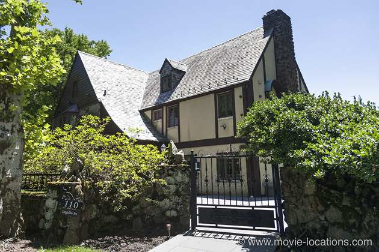
Discover where The Godfather (1972) was filmed around New York, including Manhattan, Staten Island and Long Island; Sicily; Los Angeles and Las Vegas.
With mafia movies out of fashion and relatively unknown director Francis Ford Coppola at the helm, Paramount was keen to cut costs by updating the film of Mario Puzo's best-seller to the present day and filming on its Hollywood lot.
But as paperback sales hit 12 million copies, the studio reluctantly conceded to Francis Ford Coppola' s demands, and much of the film was shot on real locations in New York.
Even most of the studio filming was done on the east coast, at New York's Filmways Studios, 246 East 127th Street, East Harlem at Second Avenue. The studio closed down to become a huge supermarket, which has in turn been demolished.
The wedding scene, at the Corleone compound on 'Long Island', did film on an island over the water from New York – not on Long Island, but Staten Island.
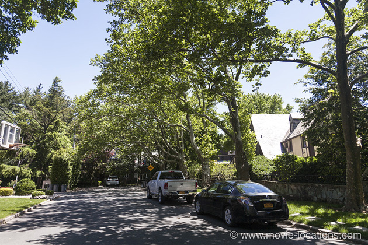
The Corleone Mansion itself is 110 Longfellow Avenue, in the affluent neighbourhood of Emerson Hill, standing toward the end of a long cul-de-sac. A false wall with entrance gate was built across Longfellow Avenue to give the appearance of the house being in a private compound.
The Staten Island Ferry will take you the five mile, 25 minute trip from the Staten Island Ferry Whitehall Terminal at South Ferry to St. George Ferry Terminal on Staten Island (for free). From St George Station, the Staten Island Rapid Transit Railway will take you four stops to Grasmere, or there's a bus service. Either way, it's about a half hour's walk north to Longfellow Avenue, a leafy cul-de-sac running east from Ocean Terrace. Numbers 110 and 120 are the last houses at the end of the road. As always, please remember these are private homes and respect the residents' privacy.
When Don Corleone sends his consigliore, Tom Hagen (Robert Duvall), to Hollywood, to make the studio head the infamous 'offer he can't refuse', there's a great newsreel shot of the old Hollywood, with Hollywood United Methodist Church on Highland Avenue (featured in movies as far back as George Cukor's 1932 What Price Hollywood?) and Grauman’s Chinese Theatre, 6925 Hollywood Boulevard, still recognisable from the days before the area became swamped by tacky tourist shops and tattoo parlours.
As a Paramount film, the entrance to 'Woltz International Picures' is natural an entrance to Paramount's own lot in Hollywood. However, it's not on of the familiar entrance gates on Melrose Avenue. It's at the more modest western entrance on Gower Street that Hagen arrives.
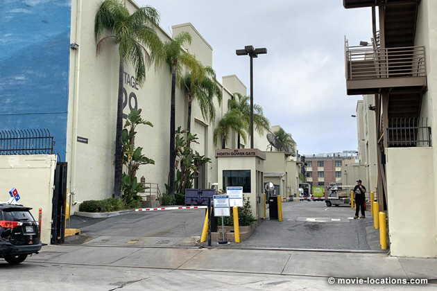
The entrance hasn't changed, but there's a bit of a culture clash here. Star Trek (the TV series and the movies) were filmed at Paramount and that street on the lot running alongside Stage 29 is named Leonard Nimoy Street in honour of the late actor.
You can book a fascinating guided tour of the lot (which I recommend highly) on the Paramount Pictures Studio Tour, 5515 Melrose Avenue.
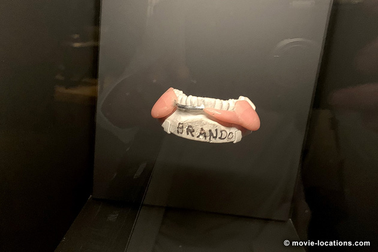
By the way, for devoted fans of the movie visiting Los Angeles, don't miss behind-the-scenes details and ephemera (including Brando's prosthetic 'jowls' – no, he wasn't padded with tissue paper in movie), currently on exhibition at the Academy Museum of Motion Pictures, 6067 Wilshire Boulevard at Fairfax Avenue in Midtown.
After Woltz eventually agrees to meet up with Hagen, it's a rare case of an East Coast residence standing in for Hollywood.
The bedroom of Woltz's villa, where the studio boss finds the head of his unfortunate horse, is the living room of Falaise, on Sands Point Preserve, the Guggenheim estate way out at 127 Middle Neck Road on Long Island. You can see the room if you visit the Preserve, which also houses mansions seen in Scent Of A Woman, in the summer months. It's about four miles north of Point Washington (there's a cab firm near the station), on the Long Island Railroad from New York's Pennsylvania Station, Seventh Avenue.
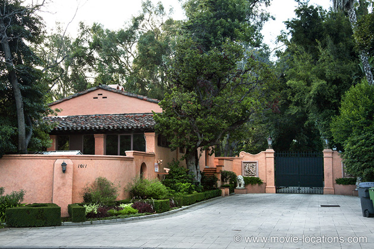
The grounds of Woltz's mansion, seen also as Whitney Houston's estate in The Bodyguard, really is Los Angeles. It's the enormous Beverly Hills estate at 1011 North Beverly Drive. Built in the 1920s, and once owned by William Randolph Hearst (the newspaper magnate on whose career Orson Welles based his classic Citizen Kane), it was put on the market in 2007 for $165 million.
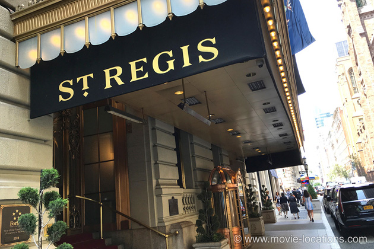
Michael Corleone (Al Pacino) and Kay (Diane Keaton) are staying in five-star luxury at the St Regis Hotel, now the St Regis New York, 2 East 55th Street on the corner of Fifth Avenue. Built in 1904 as a companion to the Waldorf-Astoria, the hotel's exterior is briefly seen toward the end of Martin Scorsese's Taxi Driver.
If you're popping in for a drink, you might recognise the hotel's King Cole bar, with its famous Maxfield Parrish mural, from films such as Woody Allen’s Radio Days, Hannah And Her Sisters, The Devil Wears Prada and The First Wives Club.
Nearby on Fifth Avenue between 51st and 52nd Streets in the fashionable stretch of ‘Ladies’ Mile’, stood Best & Co, the New York department store where the pair do their Christmas shopping. Although already closed, the store was briefly brought back to life for filming, before being demolished.
Sadly, the model-train heaven, Polk’s Hobby Shop, which stood at 314 Fifth Avenue near 31st Street, is also gone. This is where Tom Hagen stocks up on presents when Sollozzo’s men invite him for a car ride. It’s since been replaced by a pizza joint.
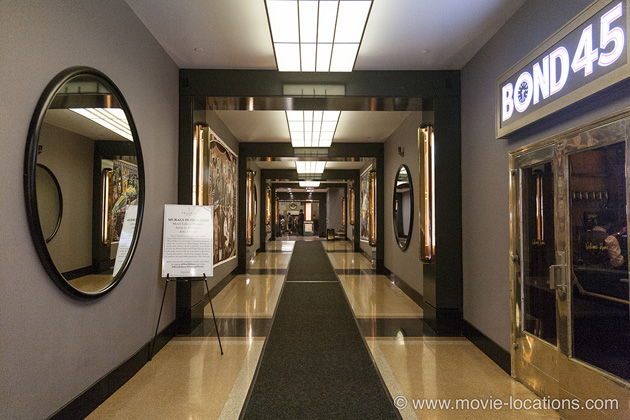
The bar, where Sollozzo (Al Lettieri) meets up with Luca Brasi, is the Edison Hotel, 228 West 47th Street. Close to the bustle of Times Square, the Edison itself is a standard hotel, but it's entrance and lobby are Manhattan art deco at its finest.
You'll recognise the slightly redecorated corridor with its circular mirrors, as the lobby of mobster Nick Valenti's penthouse in Woody Allen's Bullets Over Broadway. The only significant change is the replacement of the steps with a gentle ramp to improve access.
Try the hotel's bar, the Rum House, on 47th Street, which is featured in Alejandro González Iñárritu's 2014 Oscar-winner, Birdman.
It's long been claimed that the garroting of Brasi was filmed in Sofia’s Restaurant, the Edison’s Italian eatery, which closed some years ago. The fish motif etched into the glass door gives a clue that this scene was actually shot in the bar of what was then the Hotel St George, 100 Henry Street in Brooklyn Heights. The premises, once the largest hotel in the US and boasting a famed Olympic-sized salt-water swimming pool, is currently used as student housing.
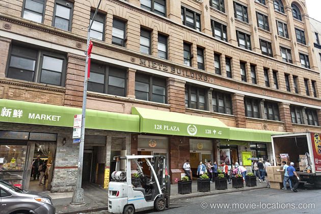
The 'Genco Olive Oil’ premises, supposedly on 'Mulberry Street', outside which the Don is gunned down, was the Mietz Building, 128 Mott Street, a then-unchanged area between Little Italy and Chinatown. The relentless encroachment of Chinatown into Little Italy means that the building has since been gutted and has become a Chinese market, though the 'Mietz’ name is still visible on the frontage. The art deco entrance was created especially for the movie.
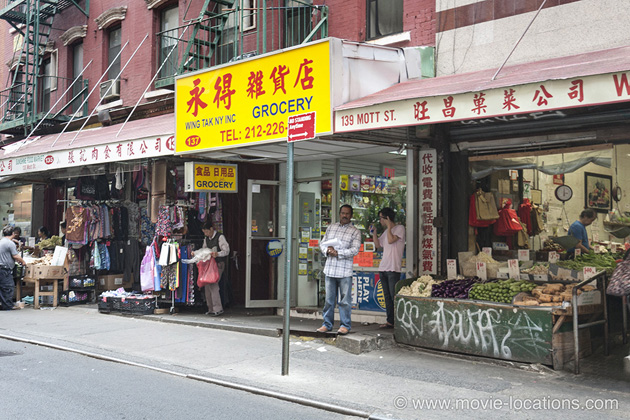
Opposite, number 137 Mott Street was the greengrocer stall at which the Don buys oranges before being gunned down. It's since been modernised but is still a grocery store.
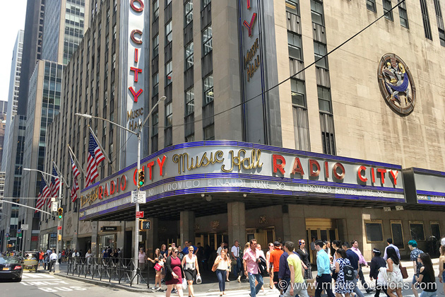
With astonishing speed, the news hits the papers while Michael and Kay watch The Bells of St Mary’s at Radio City Music Hall, 1260 Avenue of the Americas at 50th Street. Part of the magnificently art deco Rockefeller Center complex, you can see Radio City's glorious interior in John Huston's 1982 film of Annie and in Woody Allen’s Radio Days.
The exterior of hospital where Michael visits his wounded father is the Lincoln Medical Center, 234 East 149th Street in the Bronx, though the deserted interior is the New York Eye and Ear Infirmary, 310 East 14th Street in the East Village. Both institutions have since been completely rebuilt.
Michael is subsequently picked up outside Jack Dempsey’s Broadway Bar, which stood on Broadway between 49th and 50th Streets (it closed its doors in 1974), and taken towards New Jersey, which ought to mean taking the George Washington Bridge over the Hudson. The bridge used for the U-turn scene, however, is the Queensboro Bridge over the East River.
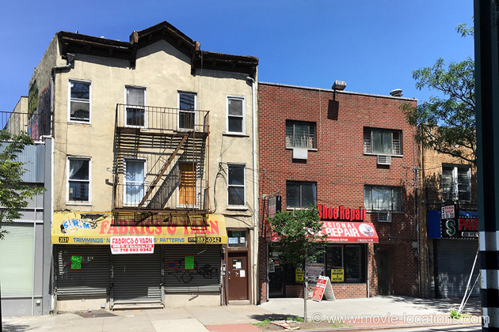
'Louis’ Restaurant', where Sollozzo and McCluskey are gunned down over the veal, was the old Luna restaurant under the elevated White Plains Road IRT in the Bronx. It's no longer a restaurant but a fabric shop, SRM Fabric & Yarn, 3531 White Plains Road, between East 211th and East 212th Streets just north of Gun Hill Road Station.
Fleeing to Sicily, Michael goes to ground in the village of ‘Corleone’. The real Corleone, south of Palermo, has been modernised, and the village seen in the film is a combination of Forza d’Agro and Savoca, two villages a few miles northwest of Taormina. In Forza, a small medieval community dominated by the ruins of a 16th century castle, you’ll find the church seen when Michael first walks into ‘Corleone’.
A few miles north, in Savoca, you can see the small, wood-panelled Bar Vitelli, at which Michael meets innkeeper’s daughter Apollonia, as well as Chiesa di Santa Lucia, the church at which he marries her.
The villa at which Michael is staying when his car is blown up, is the 18th century Castello degli Schiavi (Castle of Slaves), near Fiumefreddo, about six miles south of Taormina. (seen again in Godfather III).
Back in New York, Sonny (James Caan) beats up bullying brother-in-law Carlo at 118th Street and Pleasant Avenue, east of First Avenue in East Harlem, but soon gets his payback, blown away in a spectacular hail of bullets at tollbooths supposedly on the 'Jones Beach Causeway, Long Island', but actually built on the disused airfield Floyd Bennett Field, southeast of Brooklyn at the end of Flatbush Avenue.
Bonasera’s funeral parlour is the morgue at Bellevue Hospital, First Avenue at East 29th Street by the East River in the Gramercy district, and the summit meeting of the Five Families takes place in the boardroom of the Penn Central Railroad above Grand Central Station, 42nd Street and Park Avenue.
Michael’s foray into Las Vegas was filmed at the Tropicana, 3801 Las Vegas Boulevard South at Tropicana Avenue, on the Strip. The last, fanciest and most expensive of the Strip hotels built in the 50s, the Tropicana is the location for the ‘Folies Bergere’ number in the Elvis Presley film Viva Las Vegas.
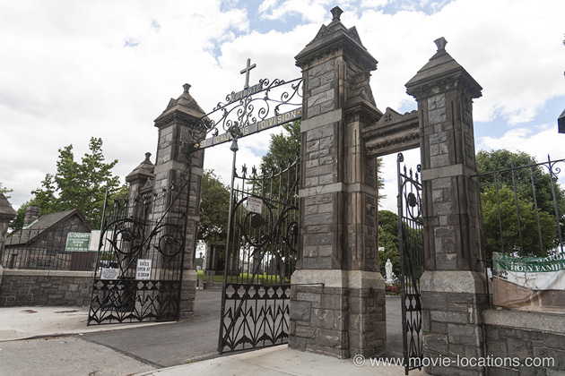
Don Corleone’s lavish funeral is held at the First Calvary Cemetery, Greenpoint Avenue in Queens, which was then overlooked by the old Kosciuszko Bridge, carrying the Brooklyn-Queens Expressway across Newton Creek. It's since been demolished, replaced by a sleeker cable bridge.
Despite the size of the cemetery, it's surprisingly easy to find the spot where the Corleone mausoleum was erected, opposite the row of mausolea toward the centre-east. Follow the path from the main entrance on Greenpoint Avenue until it curves to the left, then turn sharp left when you see the little group of tombs.
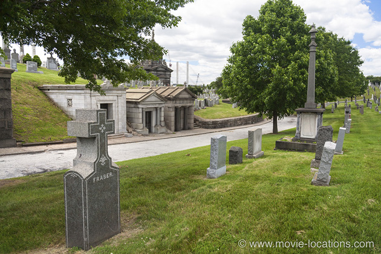
Oddly, the nearest grave seen in the film, belonging to the Daly family, appears to have turned around in the intervening years.
This is the same cemetery where 'Ratso' Rizzo (Dustin Hoffman) visits the grave of his father in John Schlesinger's 1969 Midnight Cowboy.
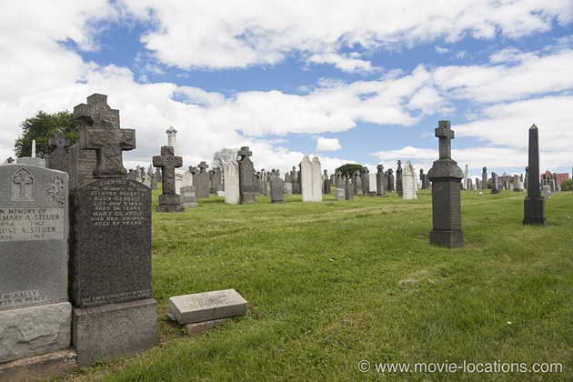
Michael now becomes Godfather in a ritual brilliantly intercut with the bloody murders of the other family heads.
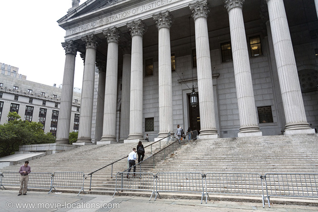
Clemenza blasts Stracci and Cuneo in the lift of the St Regis New York (where Michael and Kay spent their night in New York); Moe Greene (Alex Rocco) is shot through the eye in the steamroom of the McBurney YMCA, 215 West 23rd Street, and arch-enemy Barzini (Richard Conte) is gunned down by fake cop Al Neri on the steps of the New York County Courthouse, 60 Centre Street at Pearl Street, Lower Manhattan (the location for Sidney Lumet’s Twelve Angry Men, and Henry Hill’s trial at the end of Martin Scorsese‘s Goodfellas) .
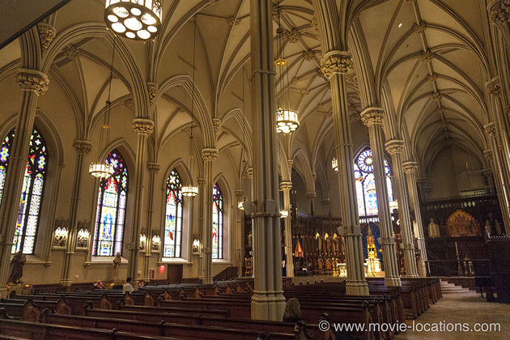
The christening itself took place inside New York’s Old St Patrick’s Cathedral, 264 Mulberry Street between East Prince and Houston Streets in Little Italy. Doesn’t look familiar from the film? That's because an entirely different church was used for exterior shots.
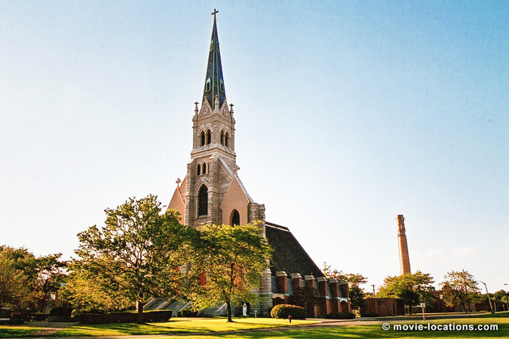
The exterior of the church is the Mission of the Immaculate Virgin, Hylan Boulevard, Mount Loretto, down in the southwest corner of Staten Island (rail: Pleasant Plains). The church burned down shortly after filming, but the façade was saved and the church behind it rebuilt – albeit on a slightly smaller scale.
Visit Info
Visit The Film Locations
New York
Flights: John F Kennedy International Airport, New York, NY 11430 (tel: 718.244.4444)
Visit: New York
Travel around: MTA
Stay at: the St Regis New York, 2 East 55th Street, New York, NY 10022 (tel: 212.753.4500)
Stay at: the Edison Hotel, 228 West 47th Street, New York, NY 10036 (tel: 212.840.5000)
Visit: Radio City Music Hall, 1260 Avenue of the Americas, New York, NY 10020 (tel: 212.465.6741)
Visit: Staten Island
Take: the Staten Island Ferry
Travel around: Staten Island Rapid Transit Railway
Visit: Long Island
Getting around: Long Island Railroad
Visit: Sands Point Preserve, 127 Middle Neck Road, Sands Point, NY 11050 (tel: 516.571.7901)
California | Los Angeles
Visit: Los Angeles
Flights: Los Angeles International Airport (LAX), 1 World Way, Los Angeles, CA 90045 (tel: 424.646.5252)
Travelling around: Los Angeles Metro
Take: the Paramount Pictures Studio Tour, Paramount Pictures Studio Tour Entrance, 5515 Melrose Avenue, Hollywood, CA 90038 (tel: 323.956.1777)
Visit: the Academy Museum of Motion Pictures, 6067 Wilshire Boulevard, Los Angeles 90036 (tel: 323.930.3000)
Nevada
Visit: Nevada
Visit: Las Vegas
Flights: Las Vegas McCarran International Airport, 5757 Wayne Newton Boulevard, Las Vegas, NV 89119 (tel: 702.261.5211)
Visit: the Tropicana, 3801 Las Vegas Boulevard South, Las Vegas, NV 89109 (tel: 702.739.2222)
Italy
Visit: Italy
Visit: Sicily